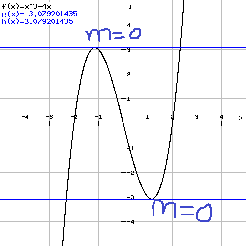
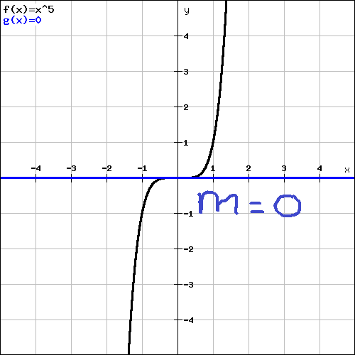

Critical points are all the points where the derivative of a function is either undefined, or zero, and in the domain of the original function. To find them, follow this process:
Find the critical points of the function f(x)=x^2.
Steps 1 and 2. x=0 is called a critical number. It's not a critical point because it's not a point.Critical points have an extremely important application. You can use them to find extreme values of a function minima and maxima. When a function reaches a peak, it hits its maximum value, and right where it is at its highest point, the slope is zero. That's why critical points can be used to find minima and maxima. But sometimes the slope can get to zero, then the function can just keep going up without forming a peak. So you need to make sure that the slope/derivative is positive before the critical number, and negative after it for a minimum you want the opposite to happen: negative before, positive after.
Here is the process:
 is positive. is increasing. at that number. is .
is positive. is increasing. at that number. is . What this process finds is called the relative extrema Minima or maxima of A, or the local extrema of A. There are also things called global or absolute extrema. Those are a little easier to find, although a tiny bit more tedious sometimes. Those are the points where the function is at its absolute highest or lowest values, not where it is just shaped like a maximum or a minimum But this is a common place for it to happen.. In the last problem we found where the function was shaped like a maximum, but we also found that after x=-13 the slope was positive forever and ever. It actually approaches infinity. So what we found was not the absolute maximum value. Just the local or relative maximum value.
So this is the process for finding absolute extrema of a function:
This section takes a lot of practice to get the process down, so make sure you get that experience.